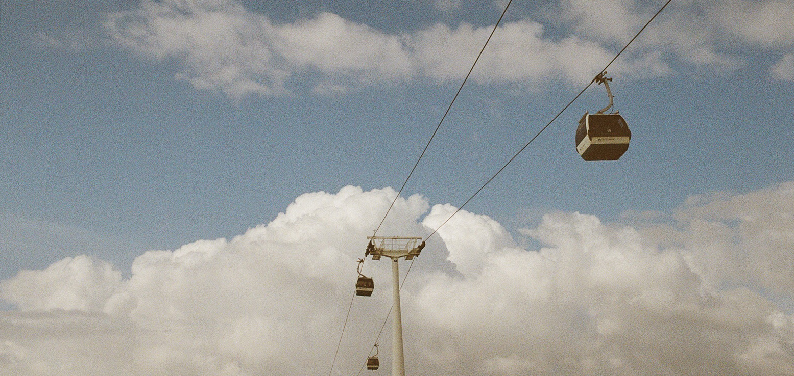

About Lisbon
Lisbon is the capital and the largest city of Portugal. This city is located on the seven hills and it has more than half a million inhabitants. Lisbon shows multiple contrasts between the historical and modern, combining different cultures, trends and lifestyles.
Legend has it that Lisbon, just like Rome, was born among seven hills. These hills were São Roque, São Jorge, São Vicente, Santo André, Santa Catarina, Chagas and Sant'Ana. These hills are still important points of the city today, integrating several poems and songs that talk about the Portuguese capital.

Lisbon is located at 38°42'49.75″N 9°8'21.79″W, situated at the mouth of the Tagus River and is the westernmost capital of a mainland European country. Rich in monuments and neighborhoods - Baixa Pombalina, Belém, Bairro Alto, Chiado, Bica, Alfama and Mouraria, - riverside zone, Fado houses, parks, gardens and viewpoints, Lisbon offers various possibilities to discover and enjoy the vast natural, historic and cultural city heritage.
Landmarks such as the Medieval Castle of St. George, Medieval Cathedral, Belem Tower, Jeronimos Monastery, National Pantheon, Palace Square and the Downtown are some of the tourist attractions of Lisbon that fascinate thousands of visitors from around the world.
Five Things You Must Do When in Lisbon
- Climb the Belem Tower
- Visit the Oceanarium
- Take the Tram 28
- Have a Bite at Time Out Market
- Party at the Lx Factory

Did You Know?
- The recipe for the delectable Pastéis de Nata is a rigorously kept secret;
- The music style fado originates from Lisbon;
- One-fourth of Portugal's population lives in Lisbon's metropolitan area;
- According to legend, it was Ulysses who founded Lisbon;
- There are 365 different ways to prepare codfish!
A map of Lisbon
Back to the top ↑